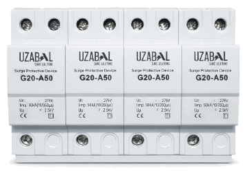
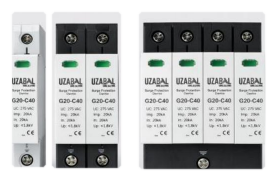
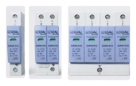
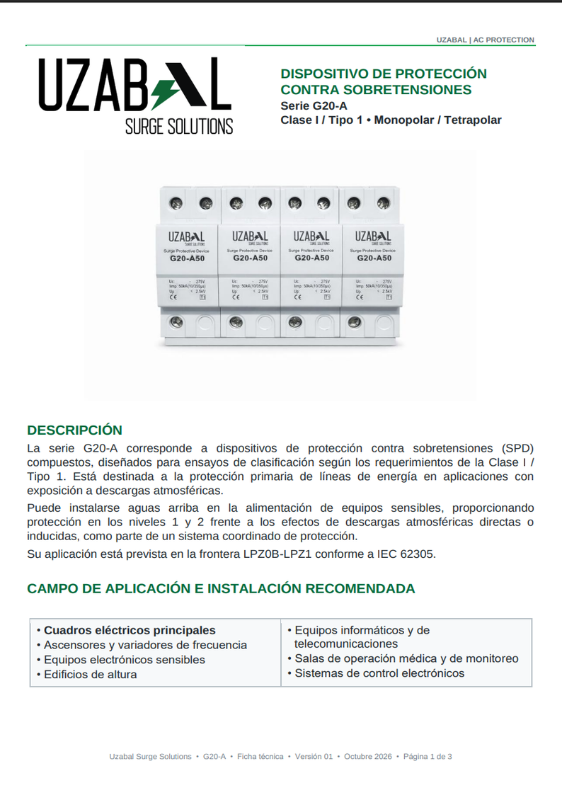
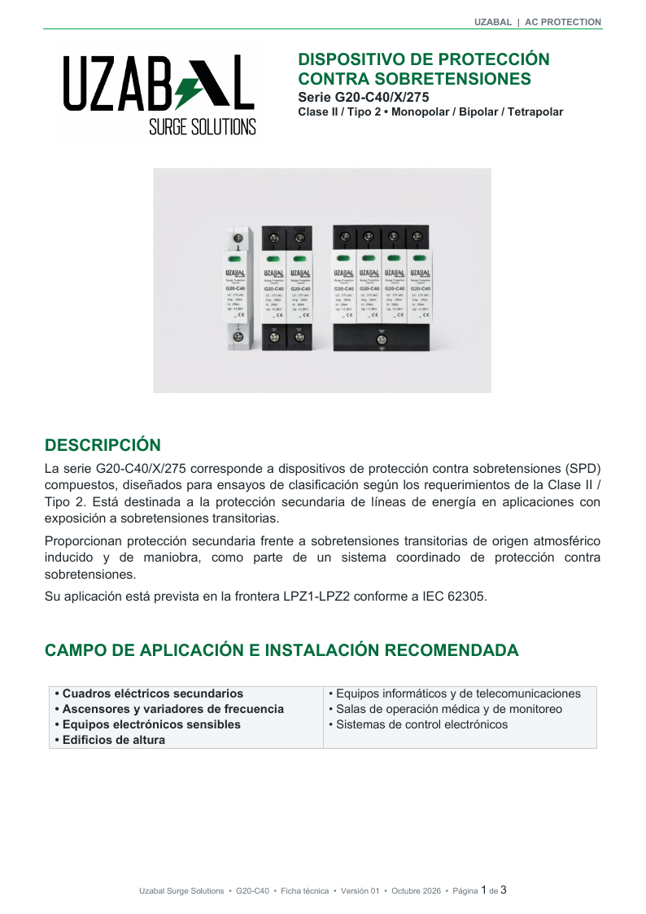
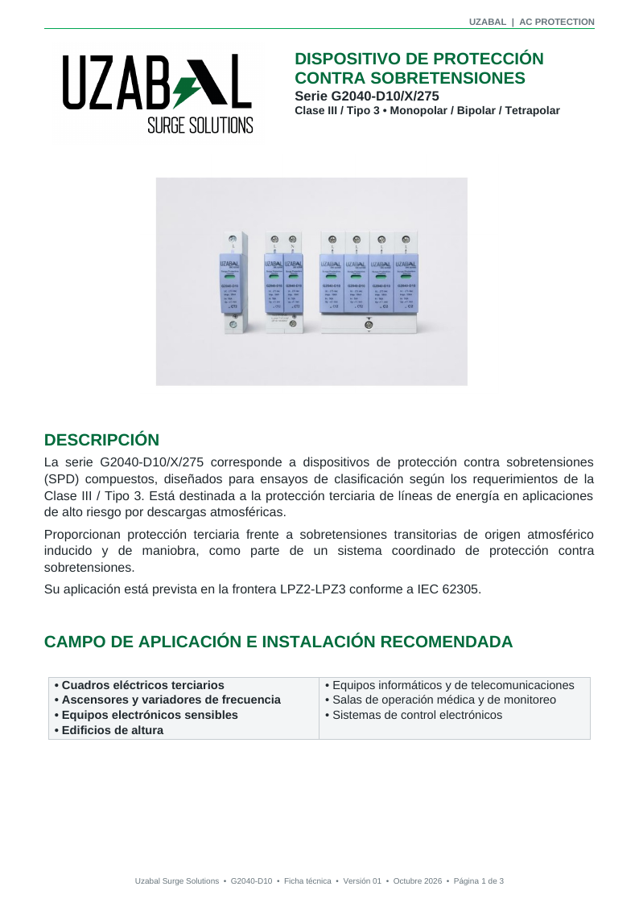

Sistemas de puesta a tierra
Medición de resistividad, diseño, evaluación y verificación de sistemas de puesta a tierra.
Soluciones para limitar sobretensiones transitorias originadas por rayos y maniobras eléctricas, protegiendo instalaciones, equipos y procesos.



Nuestra especialidad
Somos especialistas en sistemas de puesta a tierra y protección contra descargas atmosféricas. Comercializamos dispositivos de protección contra sobretensiones y aportamos el criterio de ingeniería necesario para seleccionarlos, coordinarlos y aplicarlos correctamente.
Medición de resistividad, diseño, evaluación y verificación de sistemas de puesta a tierra.
Evaluación del riesgo, diseño y verificación de sistemas externos e internos de protección contra el rayo.
Comercialización, selección, coordinación y aplicación de SPD Tipo 1, Tipo 2 y Tipo 3.
Verificación de uniones equipotenciales y continuidad de conductores de protección.
Estudios y verificaciones relacionados con fallas, perturbaciones y protección de instalaciones y equipos.
Integramos productos, mediciones y criterio de ingeniería para desarrollar soluciones de protección técnicamente coordinadas.
Productos AC
Cada nivel cumple una función dentro de un sistema coordinado. Explore las tres familias disponibles y acceda a su documentación aprobada.

Clase I / Tipo 1Diseñada para tableros principales expuestos a corrientes parciales de rayo y para la primera etapa de un sistema coordinado.

Clase II / Tipo 2Limita sobretensiones transitorias inducidas y de maniobra como segunda etapa de la protección coordinada.

Clase III / Tipo 3Reduce la sobretensión residual en tableros finales y completa el sistema coordinado de protección.
Selección orientativa
Seleccione la ubicación que desea proteger para visualizar el nivel que normalmente corresponde como orientación inicial.
Protección primaria
Para el origen de la instalación y tableros principales expuestos a corrientes parciales de rayo.
Evaluar mi instalación Esta orientación no reemplaza una evaluación técnica de la instalación.Documento técnico
Consulte los criterios básicos de ubicación, conexión, coordinación y respaldo para las series G20-A, G20-C40 y G2040-D10.
Servicios
La propuesta combina productos, mediciones, verificaciones y acompañamiento técnico según el alcance requerido.
Medición de resistividad, medición de resistencia, diseño y evaluación.
Verificación de SPD instalados y continuidad equipotencial.
Arco eléctrico y evaluaciones técnicas según el alcance contratado.
Consultoría, especificación y capacitación técnica.
Proceso consultivo
Identificamos la instalación, los equipos expuestos y las condiciones del sistema.
Seleccionamos los productos, las mediciones o los estudios técnicamente adecuados.
Proporcionamos fichas, guías y criterios para la aplicación.
Brindamos orientación y soporte técnico para la implementación.
Uzabal Surge Solutions
Integramos productos documentados, criterio de ingeniería y acompañamiento técnico para seleccionar y aplicar soluciones de protección eléctrica.
Nuestra prioridad es orientar cada decisión con información técnica clara, responsable y verificable.
Uzabal nace al identificar, durante el trabajo profesional en protección eléctrica, que muchas instalaciones estaban expuestas a sobretensiones y descargas atmosféricas mientras el mercado local presentaba disponibilidad limitada de soluciones especializadas y de orientación técnica para seleccionarlas correctamente.
Transformar conocimiento de ingeniería en soluciones especializadas y confiables que contribuyan a proteger instalaciones, equipos y procesos.
Brindar soluciones de protección eléctrica mediante productos especializados, consultoría y acompañamiento técnico, orientando su selección y aplicación con criterios de ingeniería.
Consolidar una marca regional reconocida por su especialización, responsabilidad técnica y capacidad para convertir conocimiento de ingeniería en soluciones prácticas de protección.
Contacto
Comparta los datos básicos de su necesidad para preparar una orientación inicial.
También puede contactarnos directamente a través de los siguientes correos: